# load packages
library(dplyr)
Attaching package: 'dplyr'The following objects are masked from 'package:stats':
filter, lagThe following objects are masked from 'package:base':
intersect, setdiff, setequal, unionlibrary(ggplot2)cdcdata-exercise
Murphy John
Data Description: Data was downloaded from the CDC on 2025-02-03. This dataset is titled NHANES Select Chronic Conditions Prevalence Estimates. It contains national data on obesity, high total cholesterol, and hypertension rates from 1999 to 2018 by sex, race, and age.There are a total of 950 rows and 12 columns. See here for more details.
Attaching package: 'dplyr'The following objects are masked from 'package:stats':
filter, lagThe following objects are masked from 'package:base':
intersect, setdiff, setequal, union Survey.Years Sex Age.Group
Length:950 Length:950 Length:950
Class :character Class :character Class :character
Mode :character Mode :character Mode :character
Race.and.Hispanic.Origin Measure Percent Standard.Error
Length:950 Length:950 Min. : 3.0 Min. :0.500
Class :character Class :character 1st Qu.:15.3 1st Qu.:1.500
Mode :character Mode :character Median :25.4 Median :2.000
Mean :30.0 Mean :2.212
3rd Qu.:41.1 3rd Qu.:2.800
Max. :87.5 Max. :7.500
NA's :40 NA's :40
Lower.95..CI.Limit Upper.95..CI.Limit Presentation.Standard Note1
Min. : 1.40 Min. : 5.50 Length:950 Length:950
1st Qu.:11.93 1st Qu.:19.12 Class :character Class :character
Median :20.40 Median :31.00 Mode :character Mode :character
Mean :25.55 Mean :34.82
3rd Qu.:35.10 3rd Qu.:46.50
Max. :83.60 Max. :91.20
NA's :40 NA's :40
Notea
Length:950
Class :character
Mode :character
# filter for more granular data - separate by sex, age categories
dat2 <- dat1 %>%
filter(
sex != "All",
age != "20 and over",
age != "2-19"
) %>%
mutate(
age_factor = factor(age, levels = c(
"2-5","6-11","12-19","20-29","30-39","40-49",
"50-59","60-69","70 and over")
),
age = as.numeric(age_factor),
sex = factor(sex, levels = c("Female", "Male")),
years_factor = factor(years, levels = c(
"1999-2000","2001-2002","2003-2004",
"2005-2006","2007-2008","2009-2010",
"2011-2012","2013-2014","2015-2016","2017-2018"
)),
years = as.numeric(years_factor)
)
# turn obesity, cholesterol, and hypertension into their own variables
dat3 <- dat2 %>%
group_by(years, sex, age) %>%
tidyr::pivot_wider(
names_from = measure,
values_from = percent
)[1] 180[1] 8 years sex age age_factor years_factor
Min. : 1.0 Female:90 Min. :1 2-5 :20 1999-2000:18
1st Qu.: 3.0 Male :90 1st Qu.:3 6-11 :20 2001-2002:18
Median : 5.5 Median :5 12-19 :20 2003-2004:18
Mean : 5.5 Mean :5 20-29 :20 2005-2006:18
3rd Qu.: 8.0 3rd Qu.:7 30-39 :20 2007-2008:18
Max. :10.0 Max. :9 40-49 :20 2009-2010:18
(Other):60 (Other) :72
Obesity High Total Cholesterol Hypertension
Min. : 7.20 Min. : 3.00 Min. : 4.30
1st Qu.:19.27 1st Qu.: 8.50 1st Qu.:30.65
Median :30.55 Median :13.65 Median :53.55
Mean :28.82 Mean :14.35 Mean :49.98
3rd Qu.:38.20 3rd Qu.:18.55 3rd Qu.:70.90
Max. :49.20 Max. :31.20 Max. :87.50
NA's :60 NA's :60 # A tibble: 6 × 8
# Groups: years, sex, age [6]
years sex age age_factor years_factor Obesity `High Total Cholesterol`
<dbl> <fct> <dbl> <fct> <fct> <dbl> <dbl>
1 1 Male 4 20-29 1999-2000 21.1 9.7
2 1 Male 5 30-39 1999-2000 26 12.6
3 1 Male 6 40-49 1999-2000 26.3 28.5
4 1 Male 7 50-59 1999-2000 32.2 19.8
5 1 Male 8 60-69 1999-2000 38 16.4
6 1 Male 9 70 and over 1999-2000 23.8 13.4
# ℹ 1 more variable: Hypertension <dbl># A tibble: 6 × 8
# Groups: years, sex, age [6]
years sex age age_factor years_factor Obesity `High Total Cholesterol`
<dbl> <fct> <dbl> <fct> <fct> <dbl> <dbl>
1 10 Male 1 2-5 2017-2018 14.7 NA
2 10 Male 2 6-11 2017-2018 21.3 NA
3 10 Male 3 12-19 2017-2018 22.5 NA
4 10 Female 1 2-5 2017-2018 12.2 NA
5 10 Female 2 6-11 2017-2018 19.2 NA
6 10 Female 3 12-19 2017-2018 19.9 NA
# ℹ 1 more variable: Hypertension <dbl>It looks like there is some missing data. Locate those missing observations.
years sex age
0 0 0
age_factor years_factor Obesity
0 0 0
High Total Cholesterol Hypertension
60 60 High Total Cholesterol and Hypertension data was not collected for those aged less than 19 years. Remove these observations to focus on the relationship between the three measures.
dat4 <- dat3 %>%
dplyr::rename(
obesity = Obesity,
hypertension = Hypertension,
cholesterol = `High Total Cholesterol`
) %>%
na.omit()
summary(dat4) years sex age age_factor years_factor
Min. : 1.0 Female:60 Min. :4.0 20-29 :20 1999-2000:12
1st Qu.: 3.0 Male :60 1st Qu.:5.0 30-39 :20 2001-2002:12
Median : 5.5 Median :6.5 40-49 :20 2003-2004:12
Mean : 5.5 Mean :6.5 50-59 :20 2005-2006:12
3rd Qu.: 8.0 3rd Qu.:8.0 60-69 :20 2007-2008:12
Max. :10.0 Max. :9.0 70 and over:20 2009-2010:12
(Other) : 0 (Other) :48
obesity cholesterol hypertension
Min. :19.90 Min. : 3.00 Min. : 4.30
1st Qu.:30.57 1st Qu.: 8.50 1st Qu.:30.65
Median :35.75 Median :13.65 Median :53.55
Mean :35.31 Mean :14.35 Mean :49.98
3rd Qu.:40.90 3rd Qu.:18.55 3rd Qu.:70.90
Max. :49.20 Max. :31.20 Max. :87.50
Explore each variable’s categories and/or distributions.
Female Male
1 6 6
2 6 6
3 6 6
4 6 6
5 6 6
6 6 6
7 6 6
8 6 6
9 6 6
10 6 6
4 5 6 7 8 9
1 2 2 2 2 2 2
2 2 2 2 2 2 2
3 2 2 2 2 2 2
4 2 2 2 2 2 2
5 2 2 2 2 2 2
6 2 2 2 2 2 2
7 2 2 2 2 2 2
8 2 2 2 2 2 2
9 2 2 2 2 2 2
10 2 2 2 2 2 2
4 5 6 7 8 9
Female 10 10 10 10 10 10
Male 10 10 10 10 10 10 Min. 1st Qu. Median Mean 3rd Qu. Max.
19.90 30.57 35.75 35.31 40.90 49.20 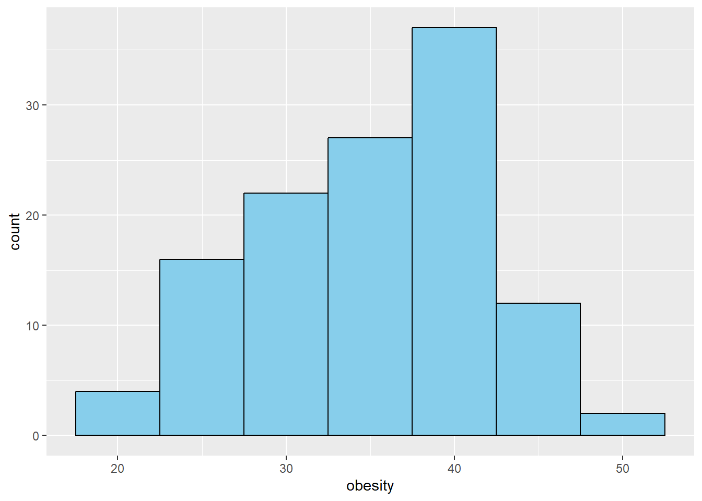
Min. 1st Qu. Median Mean 3rd Qu. Max.
3.00 8.50 13.65 14.35 18.55 31.20 ggplot(dat4, aes(x = cholesterol)) +
geom_histogram(binwidth = 5, fill = "skyblue", color = "black") 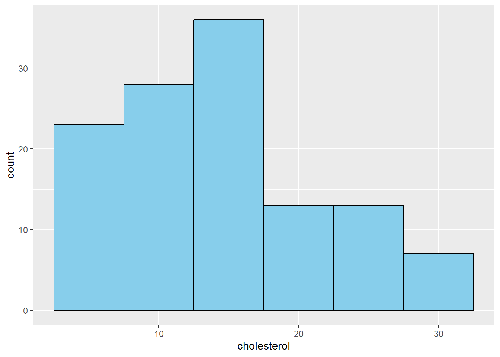
Min. 1st Qu. Median Mean 3rd Qu. Max.
4.30 30.65 53.55 49.98 70.90 87.50 ggplot(dat4, aes(x = hypertension)) +
geom_histogram(binwidth = 5, fill = "skyblue", color = "black") 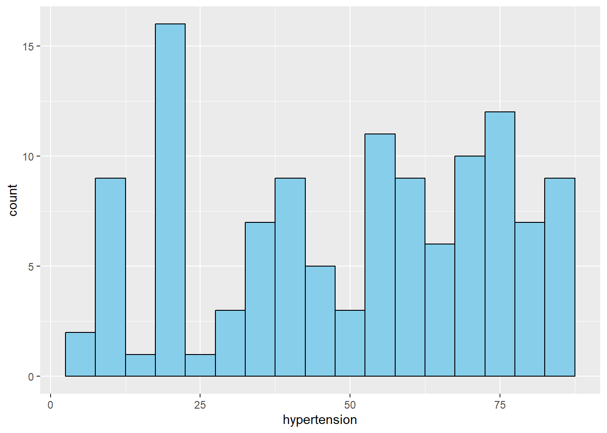
Lets look at the relationship between years and our three measurements.
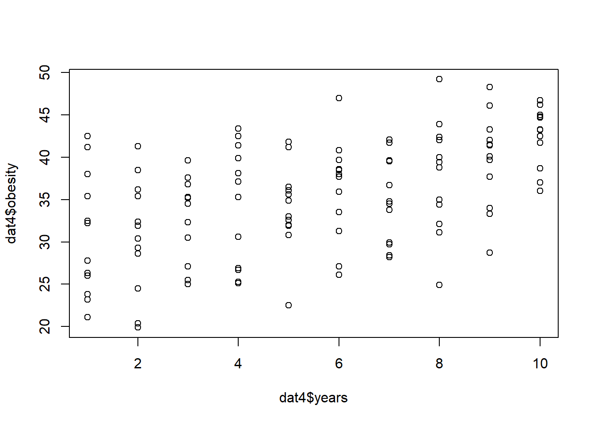
Call:
lm(formula = obesity ~ years, data = dat4)
Residuals:
Min 1Q Median 3Q Max
-13.4343 -3.9117 0.9207 4.0506 12.6361
Coefficients:
Estimate Std. Error t value Pr(>|t|)
(Intercept) 28.6539 1.1405 25.124 < 2e-16 ***
years 1.2101 0.1838 6.583 1.33e-09 ***
---
Signif. codes: 0 '***' 0.001 '**' 0.01 '*' 0.05 '.' 0.1 ' ' 1
Residual standard error: 5.783 on 118 degrees of freedom
Multiple R-squared: 0.2686, Adjusted R-squared: 0.2624
F-statistic: 43.34 on 1 and 118 DF, p-value: 1.335e-09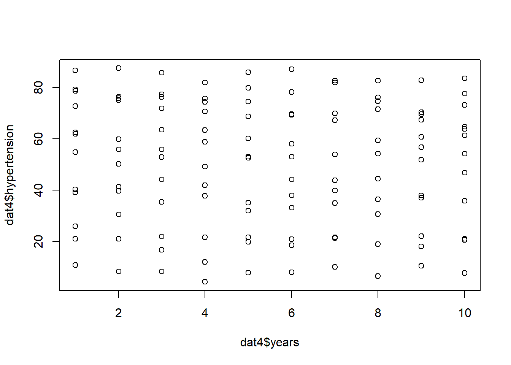
Call:
lm(formula = hypertension ~ years, data = dat4)
Residuals:
Min 1Q Median 3Q Max
-46.165 -19.006 3.323 21.174 37.282
Coefficients:
Estimate Std. Error t value Pr(>|t|)
(Intercept) 51.7594 4.7876 10.811 <2e-16 ***
years -0.3235 0.7716 -0.419 0.676
---
Signif. codes: 0 '***' 0.001 '**' 0.01 '*' 0.05 '.' 0.1 ' ' 1
Residual standard error: 24.28 on 118 degrees of freedom
Multiple R-squared: 0.001488, Adjusted R-squared: -0.006974
F-statistic: 0.1758 on 1 and 118 DF, p-value: 0.6758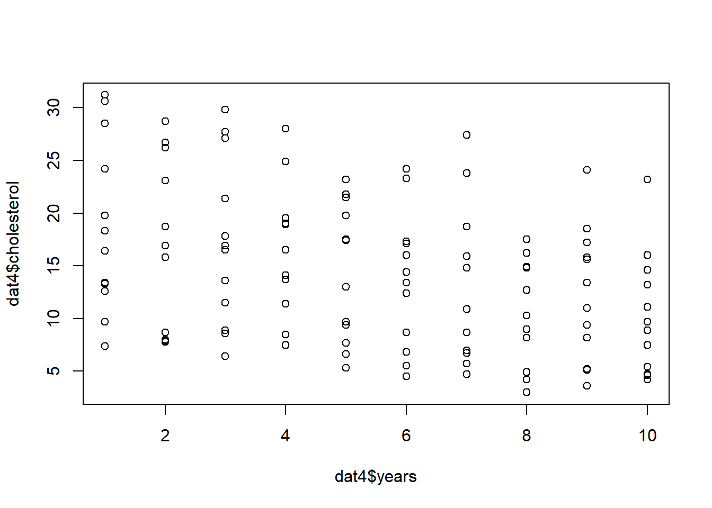
Call:
lm(formula = cholesterol ~ years, data = dat4)
Residuals:
Min 1Q Median 3Q Max
-11.0397 -5.6989 -0.5215 4.6737 14.4188
Coefficients:
Estimate Std. Error t value Pr(>|t|)
(Intercept) 19.3494 1.3118 14.750 < 2e-16 ***
years -0.9097 0.2114 -4.303 3.49e-05 ***
---
Signif. codes: 0 '***' 0.001 '**' 0.01 '*' 0.05 '.' 0.1 ' ' 1
Residual standard error: 6.652 on 118 degrees of freedom
Multiple R-squared: 0.1356, Adjusted R-squared: 0.1283
F-statistic: 18.52 on 1 and 118 DF, p-value: 3.494e-05For every one unit increase in year, there is a \(1.2\) unit increase in obesity. For every one unit increase in year, there is a \(0.9\) unit decrease in cholesterol.
Lets look at the relationship between sex and our three measurements.
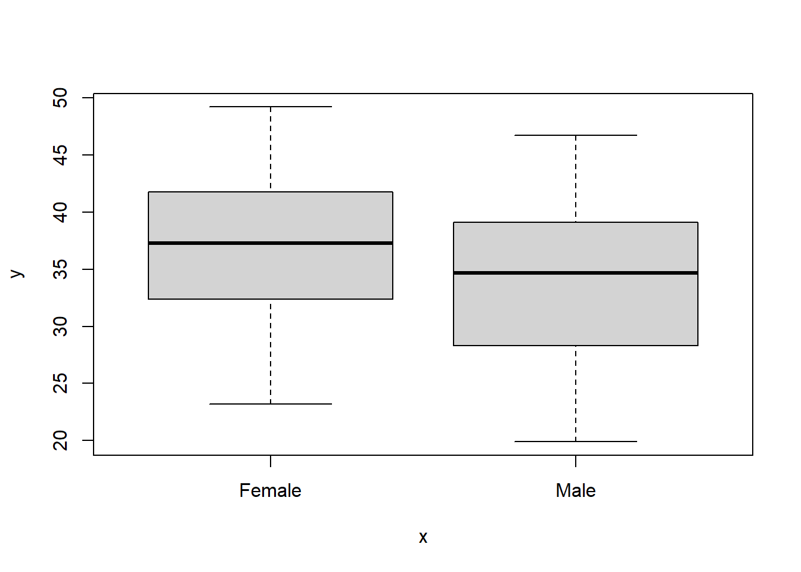
Call:
lm(formula = obesity ~ sex, data = dat4)
Residuals:
Min 1Q Median 3Q Max
-13.8950 -4.7733 0.7408 4.9837 12.9050
Coefficients:
Estimate Std. Error t value Pr(>|t|)
(Intercept) 36.8233 0.8505 43.297 <2e-16 ***
sexMale -3.0283 1.2028 -2.518 0.0131 *
---
Signif. codes: 0 '***' 0.001 '**' 0.01 '*' 0.05 '.' 0.1 ' ' 1
Residual standard error: 6.588 on 118 degrees of freedom
Multiple R-squared: 0.05098, Adjusted R-squared: 0.04294
F-statistic: 6.339 on 1 and 118 DF, p-value: 0.01315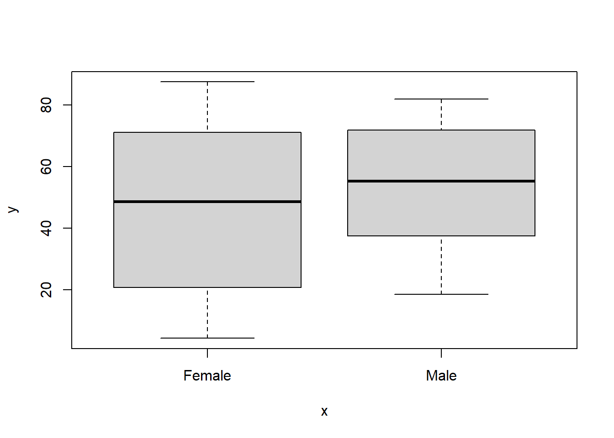
Call:
lm(formula = hypertension ~ sex, data = dat4)
Residuals:
Min 1Q Median 3Q Max
-42.232 -22.778 1.872 21.822 40.968
Coefficients:
Estimate Std. Error t value Pr(>|t|)
(Intercept) 46.532 3.104 14.990 <2e-16 ***
sexMale 6.897 4.390 1.571 0.119
---
Signif. codes: 0 '***' 0.001 '**' 0.01 '*' 0.05 '.' 0.1 ' ' 1
Residual standard error: 24.05 on 118 degrees of freedom
Multiple R-squared: 0.02049, Adjusted R-squared: 0.01219
F-statistic: 2.468 on 1 and 118 DF, p-value: 0.1189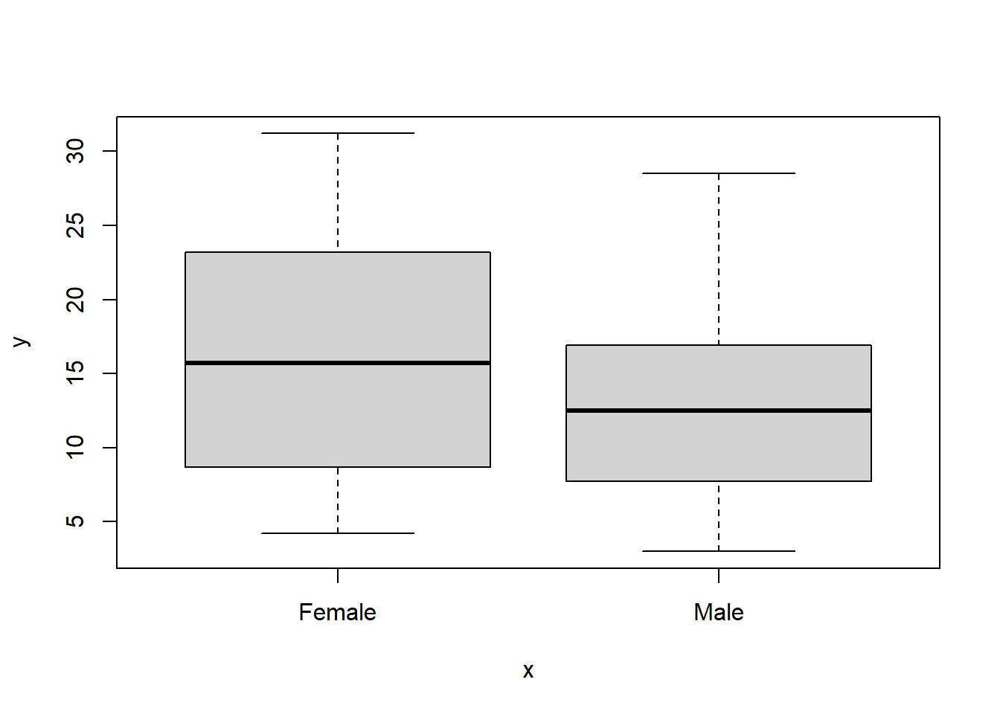
Call:
lm(formula = cholesterol ~ sex, data = dat4)
Residuals:
Min 1Q Median 3Q Max
-11.8717 -5.6700 -0.2458 4.8050 15.8800
Coefficients:
Estimate Std. Error t value Pr(>|t|)
(Intercept) 16.072 0.896 17.938 < 2e-16 ***
sexMale -3.452 1.267 -2.724 0.00743 **
---
Signif. codes: 0 '***' 0.001 '**' 0.01 '*' 0.05 '.' 0.1 ' ' 1
Residual standard error: 6.94 on 118 degrees of freedom
Multiple R-squared: 0.05917, Adjusted R-squared: 0.05119
F-statistic: 7.421 on 1 and 118 DF, p-value: 0.007428Male sex has \(3.03\) unit decrease in obesity from female sex. Male sex has \(3.45\) unit decrease in cholesterol from female sex.
Lets look at the relationship between age and our three measurements.
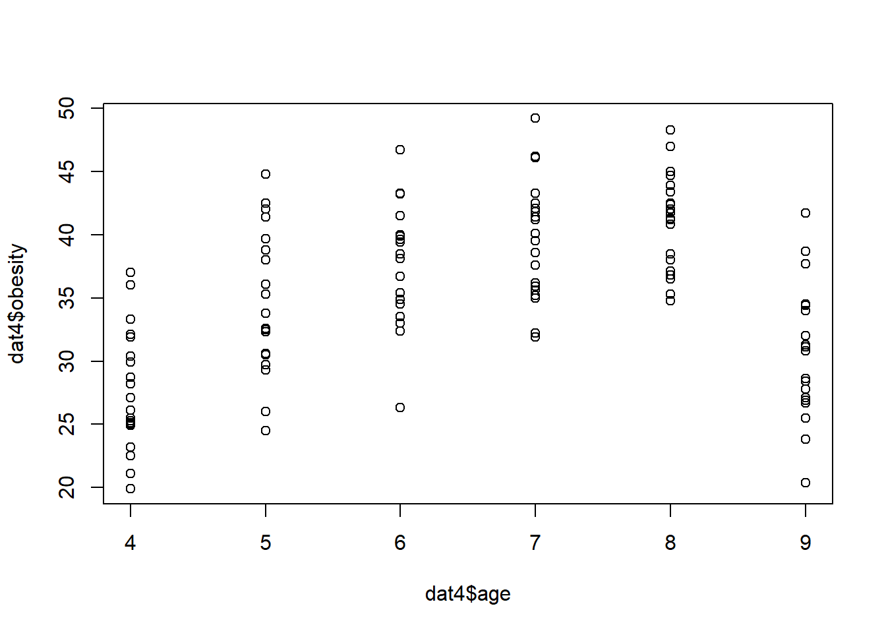
Call:
lm(formula = obesity ~ age, data = dat_age1)
Residuals:
Min 1Q Median 3Q Max
-10.0050 -3.7519 -0.4487 3.2637 11.7575
Coefficients:
Estimate Std. Error t value Pr(>|t|)
(Intercept) 17.3550 2.1604 8.033 2.15e-12 ***
age 3.1375 0.3505 8.953 2.27e-14 ***
---
Signif. codes: 0 '***' 0.001 '**' 0.01 '*' 0.05 '.' 0.1 ' ' 1
Residual standard error: 4.956 on 98 degrees of freedom
Multiple R-squared: 0.4499, Adjusted R-squared: 0.4443
F-statistic: 80.15 on 1 and 98 DF, p-value: 2.266e-14
Call:
lm(formula = obesity ~ age, data = dat_age2)
Residuals:
Min 1Q Median 3Q Max
-10.5550 -3.3300 -0.3575 3.4700 10.7450
Coefficients:
Estimate Std. Error t value Pr(>|t|)
(Intercept) 25.0240 2.2475 11.134 1.59e-13 ***
age 0.6590 0.3227 2.042 0.0481 *
---
Signif. codes: 0 '***' 0.001 '**' 0.01 '*' 0.05 '.' 0.1 ' ' 1
Residual standard error: 5.103 on 38 degrees of freedom
Multiple R-squared: 0.09888, Adjusted R-squared: 0.07517
F-statistic: 4.17 on 1 and 38 DF, p-value: 0.04813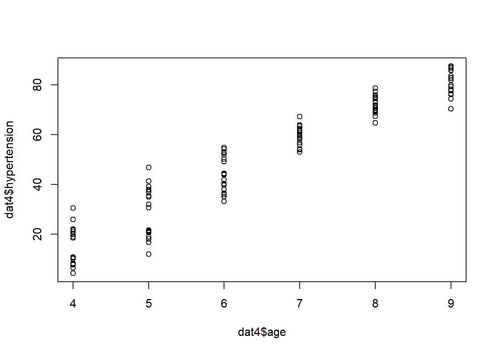
Call:
lm(formula = hypertension ~ age, data = dat4)
Residuals:
Min 1Q Median 3Q Max
-17.646 -5.528 0.542 5.195 17.154
Coefficients:
Estimate Std. Error t value Pr(>|t|)
(Intercept) -38.1340 2.4154 -15.79 <2e-16 ***
age 13.5560 0.3594 37.72 <2e-16 ***
---
Signif. codes: 0 '***' 0.001 '**' 0.01 '*' 0.05 '.' 0.1 ' ' 1
Residual standard error: 6.724 on 118 degrees of freedom
Multiple R-squared: 0.9234, Adjusted R-squared: 0.9228
F-statistic: 1423 on 1 and 118 DF, p-value: < 2.2e-16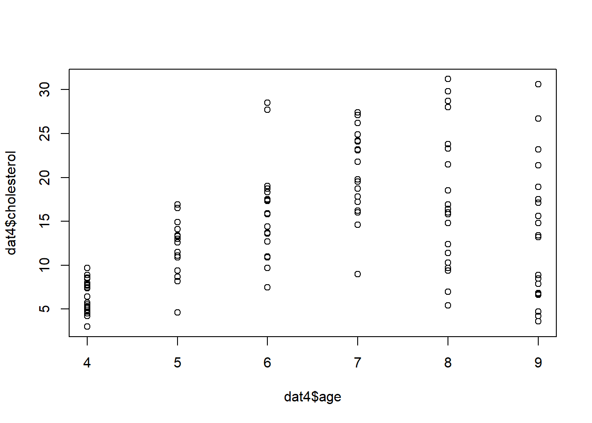
Call:
lm(formula = cholesterol ~ age, data = dat4)
Residuals:
Min 1Q Median 3Q Max
-14.8440 -4.4405 -0.5565 4.4042 14.9738
Coefficients:
Estimate Std. Error t value Pr(>|t|)
(Intercept) 3.6905 2.3618 1.563 0.121
age 1.6393 0.3514 4.665 8.21e-06 ***
---
Signif. codes: 0 '***' 0.001 '**' 0.01 '*' 0.05 '.' 0.1 ' ' 1
Residual standard error: 6.574 on 118 degrees of freedom
Multiple R-squared: 0.1557, Adjusted R-squared: 0.1485
F-statistic: 21.76 on 1 and 118 DF, p-value: 8.215e-06Excluding the final age category, for every subsequent age group, there is a \(3.14\) unit increase in obesity. There is no difference in obesity between groups 4 and 9. For every subsequent age group, there is a \(13.56\) unit increase in hypertension. For every subsequent age group, there is a \(1.64\) unit increase in cholesterol.
There are 10 2-year years categories from 1999-2018. For each years category, there is an observation for each sex (Female, Male), and within each sex, an observation for each of 6 age groups (20-29,30-39,40-49,50-59,60-69,70 and over). This makes \(6*2=12\) observations each year and \(10*12=120\) total observations in the data. Each observation has a value for percentage of population with obesity, high cholesterol, and hypertension.
Obesity overall has mean 35.31 with (30.57, 40.90) quartiles. For every one unit increase in year group, there is a \(1.2\) unit increase in obesity. Male sex has \(3.03\) unit decrease in obesity from female sex. Excluding the final age category, for every subsequent age group, there is a \(3.14\) unit increase in obesity. There is no difference in obesity between age categories “20-29” and “70 and over”.
Hypertension overall has mean 49.98 with (30.65, 70.90) quartiles. There is no obvious relationship between hypertension and year or sex. For every subsequent age group, there is a \(13.56\) unit increase in hypertension.
Cholesterol overall has mean 14.35 with (8.5, 18.55) quartiles. For every one unit increase in year, there is a \(0.9\) unit decrease in cholesterol. Male sex has \(3.45\) unit decrease in cholesterol from female sex. For every subsequent age group, there is a \(1.64\) unit increase in cholesterol.
To read the data, I set my working directory to match the project structure using setwd(“C:/Users/ajose35/Desktop/Ecole/MADA-course/murphyjohn-MADA-portfolio/coding-exercise”). Since the dataset was located in a different folder than expected, I used here::i_am(“cdcdata-exercise/data/raw/rawdata.csv”) to manually define the project root without modifying my collaborator’s code. After ensuring that here correctly resolved the file path by running file.exists(here::here(“cdcdata-exercise/data/raw/rawdata.csv”)), I successfully loaded the dataset using dat <- read.csv(here::here(“cdcdata-exercise/data/raw/rawdata.csv”)). This approach allowed me to work with the existing project structure while maintaining compatibility with my collaborator’s code.
Based on the summary the dataset contains:
Categorical variables: Survey.Years, Sex, Age.Group, Measure Numeric variables: Percent, Standard.Error, Lower.95..CI.Limit, Upper.95..CI.Limit. The create the Synthetic data I used this prompt “Generate R code to create synthetic data with 950 observations, including categorical and numeric variables that resemble the original dataset structure.”
# Loading necessary libraries
library(dplyr)
library(tidyr)
library(ggplot2)
library(fabricatr) # For realistic synthetic dataWarning: package 'fabricatr' was built under R version 4.4.2# Set seed for reproducibility
set.seed(123)
# Creating synthetic dataset
synthetic_data <- tibble(
Survey.Years = sample(c("1999-2000", "2001-2002", "2003-2004",
"2005-2006", "2007-2008", "2009-2010",
"2011-2012", "2013-2014", "2015-2016", "2017-2018"),
950, replace = TRUE),
Sex = sample(c("Male", "Female"), 950, replace = TRUE),
Age.Group = sample(c("2-5", "6-11", "12-19", "20-29", "30-39", "40-49",
"50-59", "60-69", "70 and over"), 950, replace = TRUE),
Measure = sample(c("Obesity", "High Total Cholesterol", "Hypertension"), 950, replace = TRUE),
Percent = round(runif(950, min = 3, max = 90), 1), # Simulated percentages
Standard.Error = round(runif(950, min = 0.5, max = 7.5), 2),
Lower.95..CI.Limit = Percent - runif(950, min = 1.5, max = 8.0),
Upper.95..CI.Limit = Percent + runif(950, min = 1.5, max = 8.0)
)
# Saving synthetic data
#write.csv(synthetic_data, "synthetic_data.csv", row.names = FALSE)
# View first few rows
head(synthetic_data)# A tibble: 6 × 8
Survey.Years Sex Age.Group Measure Percent Standard.Error Lower.95..CI.Limit
<chr> <chr> <chr> <chr> <dbl> <dbl> <dbl>
1 2003-2004 Male 70 and o… High T… 61.2 4.86 53.9
2 2003-2004 Male 6-11 Obesity 11.7 3.24 6.61
3 2017-2018 Fema… 40-49 High T… 21 6.55 15.7
4 2001-2002 Male 12-19 Obesity 85.4 4.35 82.4
5 2009-2010 Fema… 12-19 High T… 52.4 6.47 47.4
6 2007-2008 Fema… 60-69 Obesity 38.5 4.11 31.3
# ℹ 1 more variable: Upper.95..CI.Limit <dbl>In the cleaning process I performed data selection, filtering, and transformation.
# Cleaning and Processing the Synthetic Data
# Selecting relevant variables
synthetic_dat1 <- synthetic_data %>%
select(
years = Survey.Years,
sex = Sex,
age = Age.Group,
measure = Measure,
percent = Percent
)
# Filtering granular data - exclude "All" and broad age categories
synthetic_dat2 <- synthetic_dat1 %>%
filter(
sex != "All",
age != "20 and over",
age != "2-19"
) %>%
mutate(
age_factor = factor(age, levels = c(
"2-5", "6-11", "12-19", "20-29", "30-39", "40-49",
"50-59", "60-69", "70 and over")
),
age = as.numeric(age_factor),
sex = factor(sex, levels = c("Female", "Male")),
years_factor = factor(years, levels = c(
"1999-2000", "2001-2002", "2003-2004",
"2005-2006", "2007-2008", "2009-2010",
"2011-2012", "2013-2014", "2015-2016", "2017-2018"
)),
years = as.numeric(years_factor)
)
# CHECK FOR DUPLICATES BEFORE PIVOTING
synthetic_dat2 %>%
group_by(years, sex, age, measure) %>%
summarise(n = n(), .groups = "drop") %>%
filter(n > 1)# A tibble: 288 × 5
years sex age measure n
<dbl> <fct> <dbl> <chr> <int>
1 1 Female 1 Hypertension 2
2 1 Female 1 Obesity 2
3 1 Female 2 Hypertension 2
4 1 Female 3 High Total Cholesterol 3
5 1 Female 3 Hypertension 3
6 1 Female 4 High Total Cholesterol 3
7 1 Female 4 Hypertension 3
8 1 Female 4 Obesity 4
9 1 Female 5 Obesity 2
10 1 Female 6 High Total Cholesterol 2
# ℹ 278 more rows# Summarizing percent values to ensure uniqueness before pivoting
synthetic_dat3 <- synthetic_dat2 %>%
group_by(years, sex, age, measure) %>%
summarise(percent = mean(percent, na.rm = TRUE), .groups = "drop") %>% # Take mean to resolve duplicates
tidyr::pivot_wider(
names_from = measure,
values_from = percent
)
# Rename columns to match cleaned dataset
synthetic_dat4 <- synthetic_dat3 %>%
rename(
obesity = Obesity,
hypertension = Hypertension,
cholesterol = `High Total Cholesterol`
) %>%
na.omit() years sex age hypertension obesity
Min. : 1.000 Female:50 Min. :1.00 Min. :11.10 Min. : 4.55
1st Qu.: 3.000 Male :52 1st Qu.:3.00 1st Qu.:36.63 1st Qu.:34.67
Median : 6.000 Median :5.00 Median :44.32 Median :45.27
Mean : 5.804 Mean :5.02 Mean :48.25 Mean :46.36
3rd Qu.: 8.000 3rd Qu.:7.00 3rd Qu.:60.42 3rd Qu.:57.30
Max. :10.000 Max. :9.00 Max. :89.60 Max. :86.00
cholesterol
Min. : 5.40
1st Qu.:37.02
Median :46.22
Mean :45.90
3rd Qu.:56.83
Max. :85.70 years sex age hypertension obesity cholesterol
0 0 0 0 0 0 #Histogram of Obesity Rates
ggplot(synthetic_dat4 %>% filter(!is.na(obesity)), aes(x = obesity)) +
geom_histogram(binwidth = 5, fill = "blue", alpha = 0.6, color = "black") +
theme_minimal() +
labs(title = "Obesity Rate Distribution ", x = "Obesity Rate", y = "Count")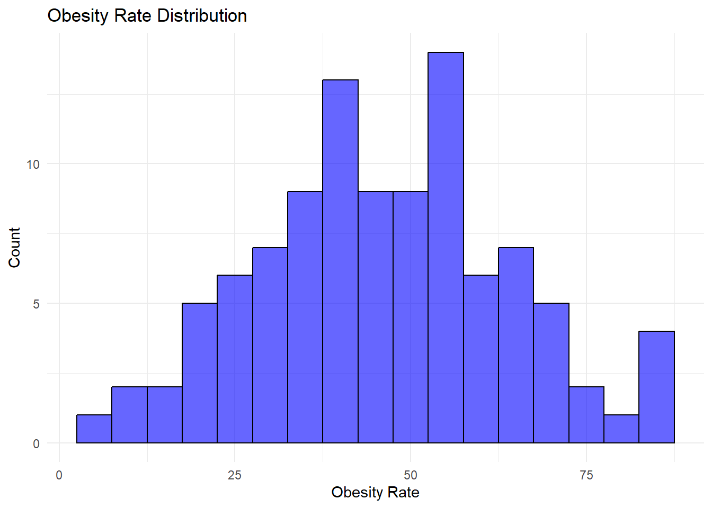
#Boxplot of Cholesterol by Sex
ggplot(synthetic_dat4, aes(x = sex, y = cholesterol, fill = sex)) +
geom_boxplot() +
theme_minimal() +
labs(title = "Cholesterol Levels by Sex", x = "Sex", y = "Cholesterol Level")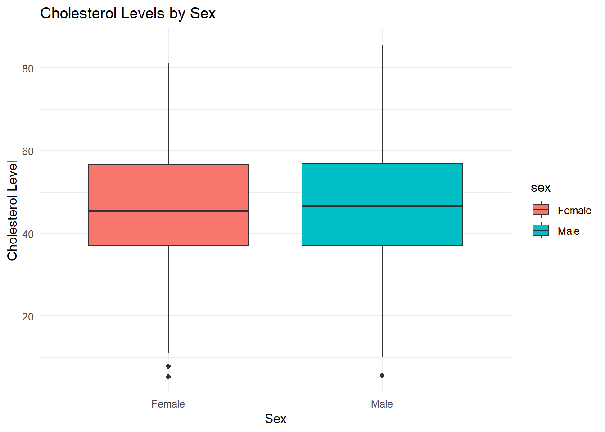
# Line Plot of Hypertension Over Years
ggplot(synthetic_dat4, aes(x = years, y = hypertension, color = sex)) +
geom_point(alpha = 0.5) + # Add scatter points for better visibility
geom_smooth(method = "loess", se = FALSE, size = 1) + # Add smoothed trend line
theme_minimal() +
labs(title = "Hypertension Levels Over Years",
x = "Year", y = "Hypertension Rate") +
scale_x_continuous(breaks = unique(synthetic_dat4$years)) # Ensure year labels are readableWarning: Using `size` aesthetic for lines was deprecated in ggplot2 3.4.0.
ℹ Please use `linewidth` instead.`geom_smooth()` using formula = 'y ~ x'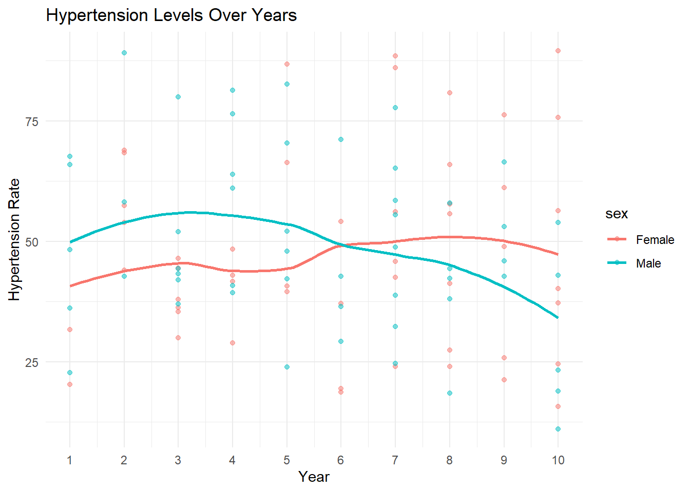
# Bar Chart Hypertension Levels by Year
ggplot(synthetic_dat4, aes(x = as.factor(years), y = hypertension, fill = sex)) +
geom_bar(stat = "identity", position = "dodge") +
theme_minimal() +
labs(title = "Hypertension Levels by Year",
x = "Year", y = "Hypertension Rate") +
scale_fill_manual(values = c("blue", "pink")) # Custom colors for Male/Female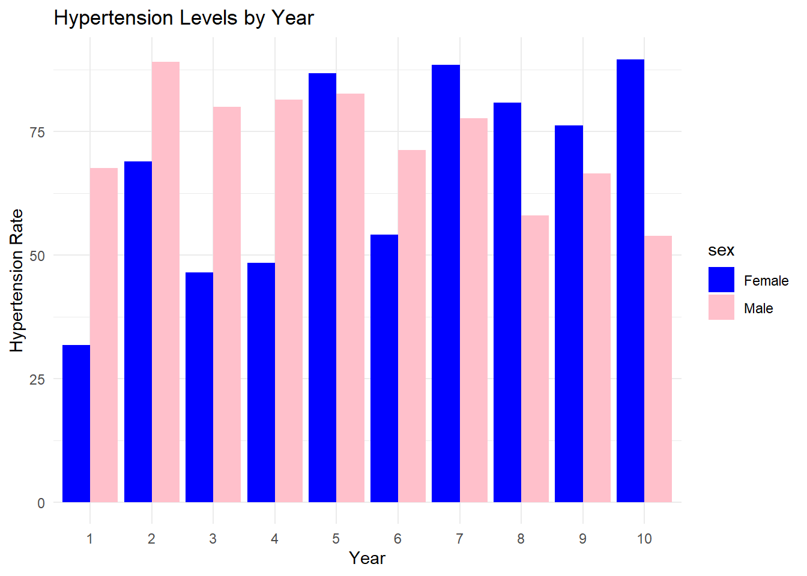
Running Regression Models on the Synthetic Data Because these models will help analyze trends, test hypotheses, and validate data structure. Addiionally, they will assess associations between health indicators and predictors, checking for statistical significance and identifying gaps where more variables may improve predictions.
Call:
lm(formula = obesity ~ years, data = synthetic_dat4)
Residuals:
Min 1Q Median 3Q Max
-41.222 -11.902 -1.321 10.831 39.904
Coefficients:
Estimate Std. Error t value Pr(>|t|)
(Intercept) 49.1880 4.1186 11.943 <2e-16 ***
years -0.4880 0.6397 -0.763 0.447
---
Signif. codes: 0 '***' 0.001 '**' 0.01 '*' 0.05 '.' 0.1 ' ' 1
Residual standard error: 18 on 100 degrees of freedom
Multiple R-squared: 0.005787, Adjusted R-squared: -0.004155
F-statistic: 0.582 on 1 and 100 DF, p-value: 0.4473
Call:
lm(formula = hypertension ~ sex, data = synthetic_dat4)
Residuals:
Min 1Q Median 3Q Max
-37.988 -11.714 -3.843 11.577 42.223
Coefficients:
Estimate Std. Error t value Pr(>|t|)
(Intercept) 47.377 2.712 17.471 <2e-16 ***
sexMale 1.711 3.798 0.451 0.653
---
Signif. codes: 0 '***' 0.001 '**' 0.01 '*' 0.05 '.' 0.1 ' ' 1
Residual standard error: 19.18 on 100 degrees of freedom
Multiple R-squared: 0.002026, Adjusted R-squared: -0.007953
F-statistic: 0.203 on 1 and 100 DF, p-value: 0.6533
Call:
lm(formula = cholesterol ~ age, data = synthetic_dat4)
Residuals:
Min 1Q Median 3Q Max
-40.657 -8.580 0.493 10.665 40.136
Coefficients:
Estimate Std. Error t value Pr(>|t|)
(Intercept) 45.0709 3.8711 11.643 <2e-16 ***
age 0.1644 0.6871 0.239 0.811
---
Signif. codes: 0 '***' 0.001 '**' 0.01 '*' 0.05 '.' 0.1 ' ' 1
Residual standard error: 17.76 on 100 degrees of freedom
Multiple R-squared: 0.0005724, Adjusted R-squared: -0.009422
F-statistic: 0.05727 on 1 and 100 DF, p-value: 0.8114Model Predictor Effect Significance (p-value) Interpretation Obesity ~ Years Years -0.488 (↓) 0.447 No significant trend in obesity over time Hypertension ~ Sex Male vs. Female +1.711 (↑) 0.653 No significant difference in hypertension between sexes Cholesterol ~ Age Age +0.164 (↑) 0.811 No significant impact of age on cholesterol
The regression analysis shows no significant relationships between obesity, hypertension, or cholesterol and their predictors. Obesity trends over time show a slight decline (-0.488 per year), but this effect is not significant (p = 0.447). Hypertension rates are slightly higher in males (+1.711), but the difference is insignificant (p = 0.653). Cholesterol levels increase slightly with age (+0.164), but age has no meaningful impact (p = 0.811).
All models have low R-squared values, indicating weak predictive power. The dataset likely lacks key variables or requires better transformations to capture meaningful patterns.
This comparison will allow me to check similarity, compare means and standard deviations.
# Comparing the Synthetic and Original Data
comparison_table <- tibble(
Variable = c("Obesity", "Cholesterol", "Hypertension"),
Original_Mean = c(35.31, 14.35, 49.98), # Replace with real means
Synthetic_Mean = c(mean(synthetic_dat4$obesity), mean(synthetic_dat4$cholesterol), mean(synthetic_dat4$hypertension)),
Original_SD = c(6.58, 6.94, 24.05),
Synthetic_SD = c(sd(synthetic_dat4$obesity), sd(synthetic_dat4$cholesterol), sd(synthetic_dat4$hypertension))
)
print(comparison_table)# A tibble: 3 × 5
Variable Original_Mean Synthetic_Mean Original_SD Synthetic_SD
<chr> <dbl> <dbl> <dbl> <dbl>
1 Obesity 35.3 46.4 6.58 18.0
2 Cholesterol 14.4 45.9 6.94 17.7
3 Hypertension 50.0 48.2 24.0 19.1The comparison between the synthetic and original datasets shows some differences in means and standard deviations for obesity, cholesterol, and hypertension. Obesity levels in the synthetic data (Mean = 46.36, SD = 17.97) are higher than the original (Mean = 35.31, SD = 6.58), suggesting a wider distribution. Cholesterol levels also appear inflated in the synthetic dataset (Mean = 45.90 vs. 14.35), with a higher standard deviation (17.67 vs. 6.94), indicating greater variability. Hypertension levels, however, remain closer to the original data (Mean = 48.25 vs. 49.98, SD = 19.10 vs. 24.05), showing a better match.
Overall, while hypertension is relatively well-aligned, obesity and cholesterol in the synthetic dataset deviate significantly from the original, suggesting the need for better parameter tuning to improve realism.